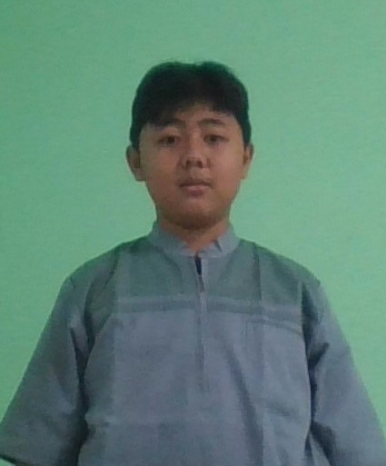

Portofolio Gio
Tentang Saya

Nama: Giovan Zulva H.P
Tgl Lahir: 03-12-2010
Kelas: 7 SMP
Projek CSS
1. Css Colors

Disini aku membuat tulian jadi ada backgroundnya dan mewarnai backgroundnya
Project nya di sini
2. Font Properties

Project nya di sini
3. Box Model

Project nya di sini
4. Motivational

Project nya di sini
Lainnya
Contact Me
My Hobi